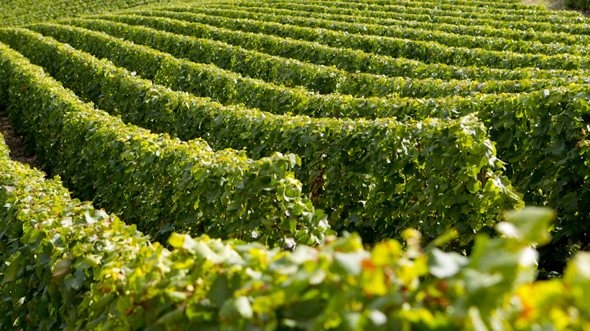

Service et conservation
Bien servir et conserver le Champagne
Température, ouverture, choix du verre et conservation : les gestes simples qui permettent de préparer la dégustation.
Lire le guide de service
Des repères concrets pour servir, choisir et comprendre le Champagne, depuis les vignes de Channes jusqu’à la table.
Ces articles répondent aux questions utiles sans remplacer le conseil direct de la maison.
Température, ouverture, choix du verre et conservation : les gestes simples qui permettent de préparer la dégustation.
Lire le guide de serviceVendange, assemblage, prise de mousse et repos en cave : les étapes suivies par la maison avant la mise en vente.
Comprendre l’élaborationPinot Noir, Chardonnay et assemblage : des repères pour relier le terroir de Channes au profil des cuvées.
Découvrir la compositionComparer les cuvées, commander en direct ou trouver un dépositaire : les différentes façons de découvrir la maison.
Lire les nouvelles de la maison